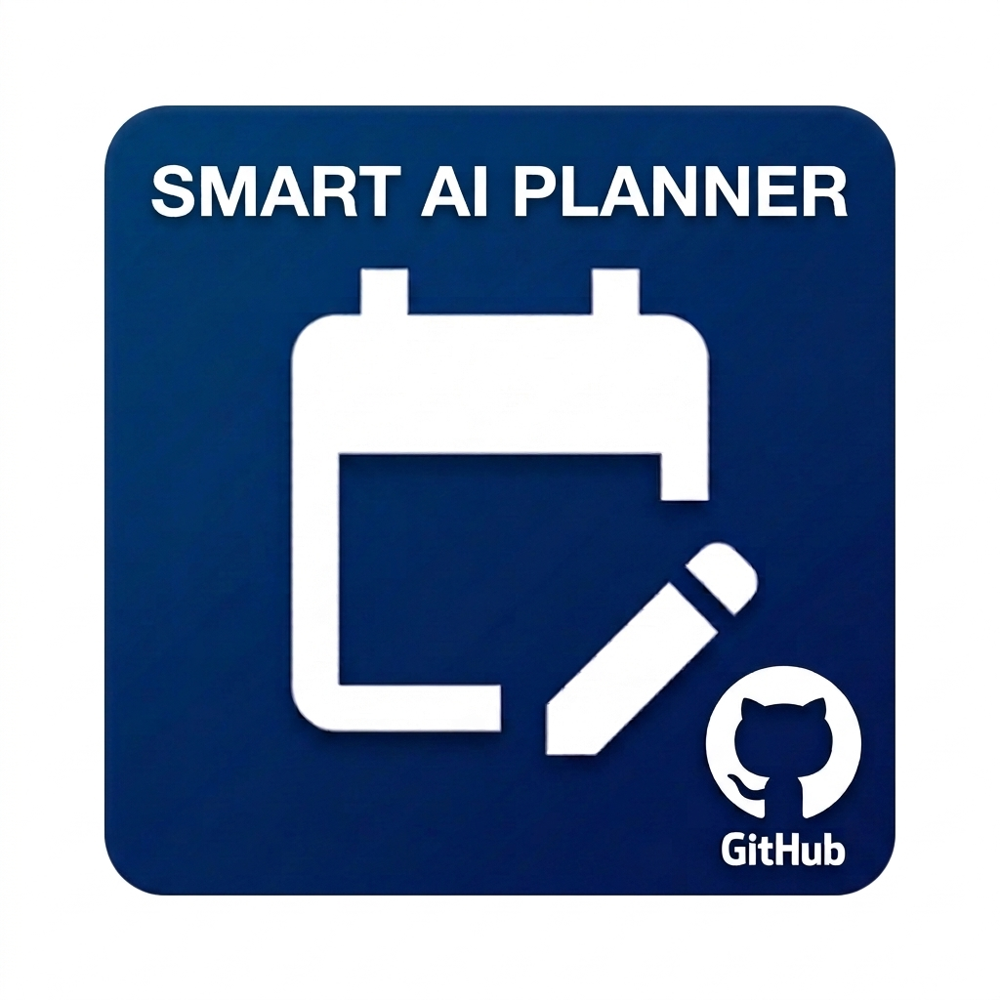
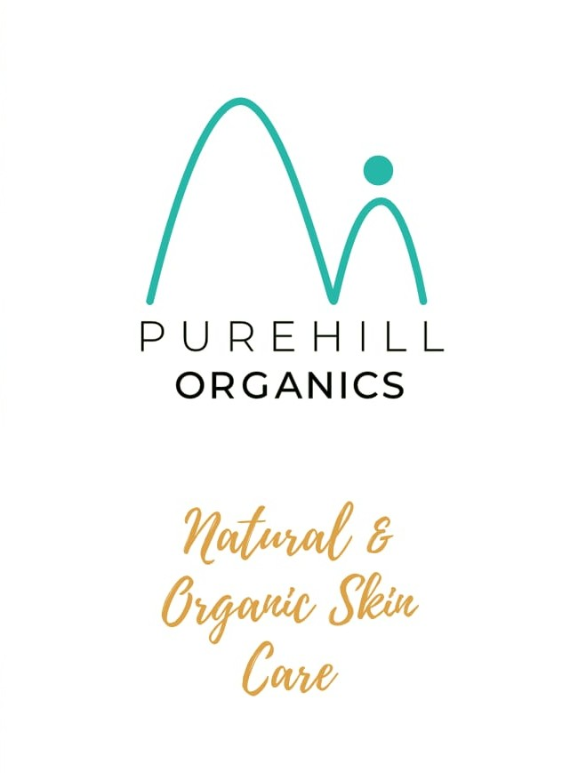
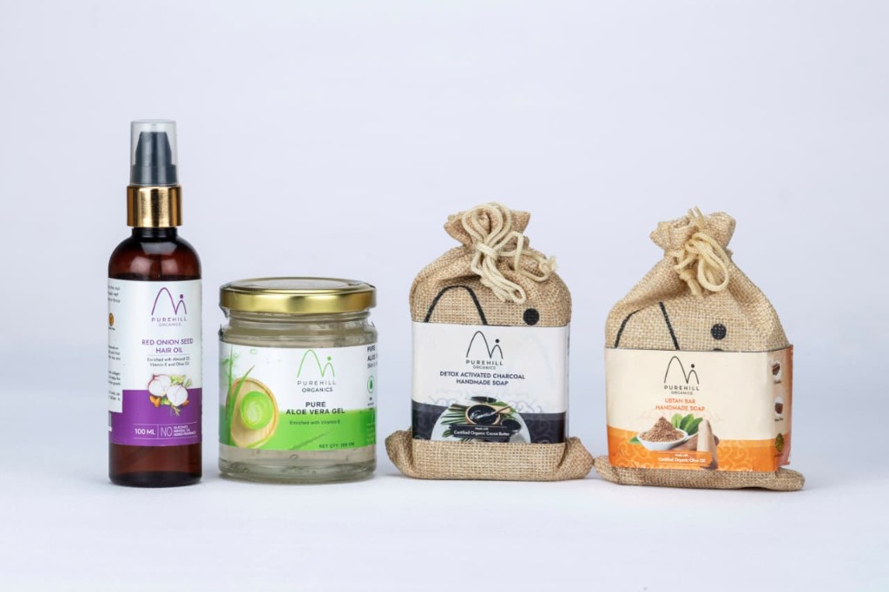
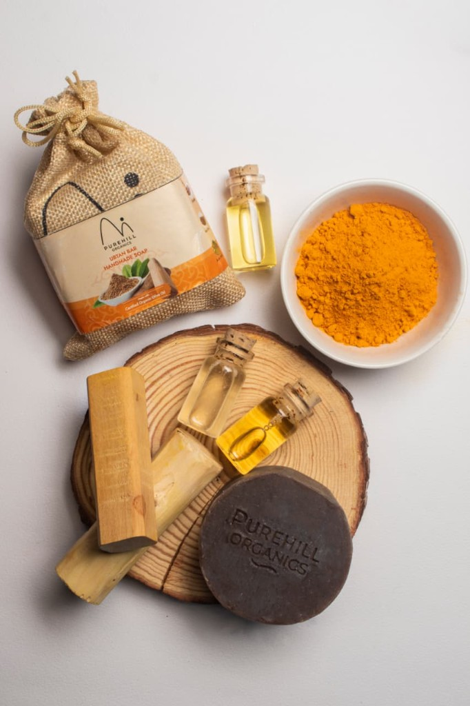
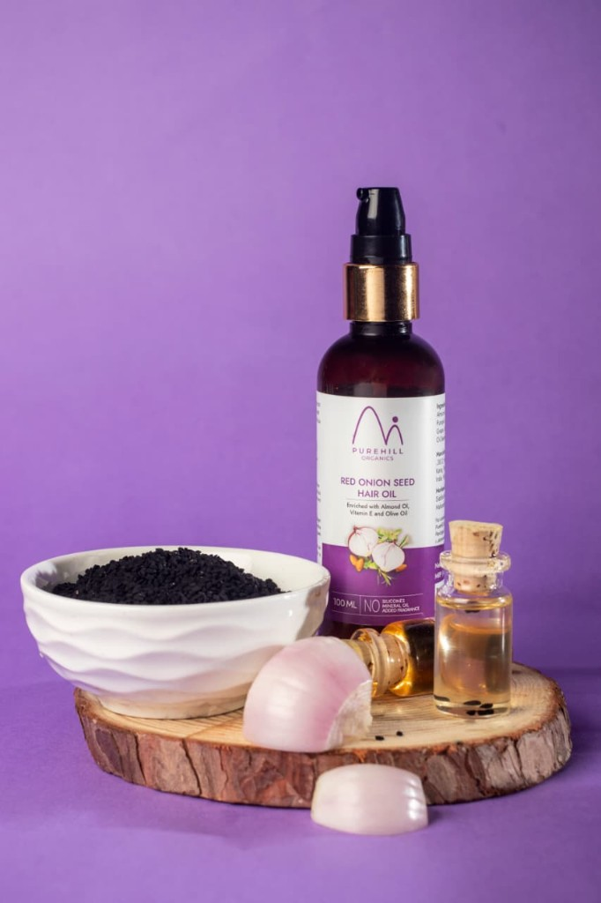
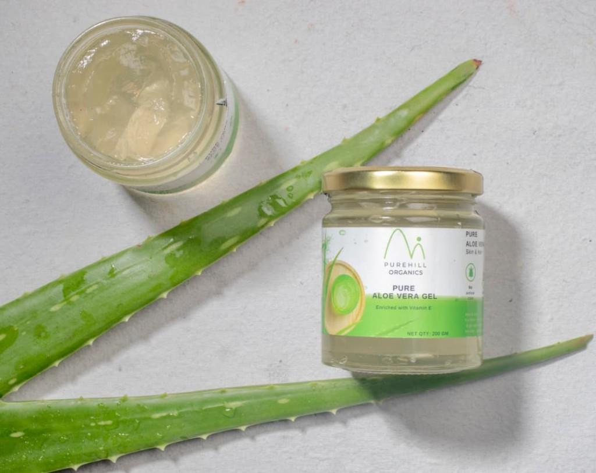
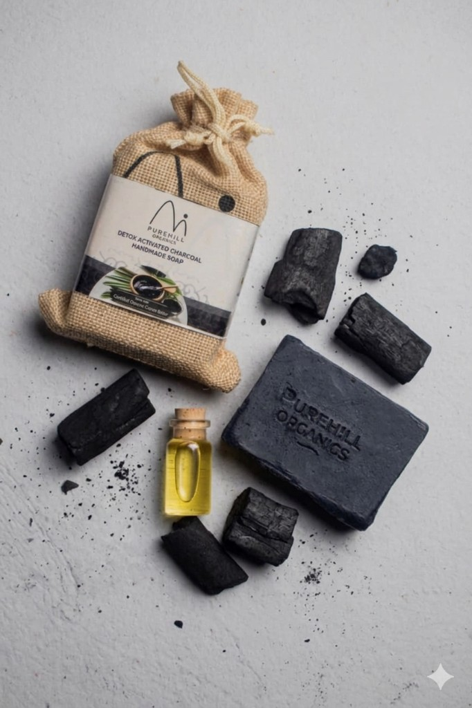

MayurVanne
PMP | Technical & Product
Focused on
PMP-certified professional leading technical initiatives across engineering, business and operations, driving 90%+ on-time delivery and 25% faster execution. Actively seeking Summer 2026 internships to leverage technical, product and project experience.
Mayur Anil Vanne
PMP-Certified Technical & Product Professional
Get to Know Me
Driving Technical Projects, Product Strategy & Data-Driven Impact
PMP-certified professional with experience leading technical projects, product operations and cross-functional collaboration across engineering, business and finance teams. I specialize in translating complex requirements into executable roadmaps and ensuring high-quality delivery aligned with auditing and compliance standards.
Currently pursuing an MS in Management of Technology at New York University's Tandon School of Engineering, with coursework spanning operations management, financial analysis for tech managers, and economics & strategy. I leverage a blend of technical, analytical and managerial skills to drive faster execution, optimize processes and enable informed, strategic decision making.
90%+
On-Time Project Delivery
25%
Faster Execution Achieved
8
Products Launched
Specialization
Technical Project Management, Product & Operations, Data & AI
Experience Level
PMP-Certified Professional
Education
MS, Management of Technology, NYU Tandon
Languages
English, Marathi, Hindi
Skills
PMP-certified technical professional combining project/program management, product operations and data-driven analysis to deliver efficient, high-impact outcomes.
Technical & Product Skills
Python, Java, JavaScript, HTML, CSS
85%Expert level knowledge of semantic HTML5 and modern CSS3 techniques
Project & Program Management (Agile, Scrum, Kanban)
90%Strong proficiency in ES6+, DOM manipulation, and modern frameworks
Product Management & Operations
85%Experience with React hooks, state management, and component architecture
Data, Tools & Platforms
Data Analysis: Statistics, Power BI, Tableau
80%Server-side JavaScript development with Express and REST APIs
Databases: SQL, Microsoft Excel, Oracle
80%Python development with Django and data analysis tools
Tools: Jira, Git, MS Word, PowerPoint
85%Database design, optimization, and complex queries
Professional Summary
PMP-certified professional leading technical projects and cross-functional initiatives, achieving 90%+ on-time delivery and 25% faster execution, seeking management-focused Summer 2026 internships leveraging technical, product and project experience.
About Me
PMP-certified professional with experience leading technical projects, product launches and operations across technology and business environments. Proven track record in translating client requirements into detailed user stories and technical tasks, coordinating cross-functional teams, and driving faster, compliant project delivery.
Contact Information
Location
New York, NYEmail
mayurvanne@outlook.comPhone
+1 (929) 370-7587LinkedIn
linkedin.com/in/mayur-vanne
Technical Skills
Programming: Python, Java, JavaScript, HTML, CSS
85%
Data Analysis: Statistics, Power BI, Tableau
80%
Databases: SQL, Excel, Oracle
80%
Tools: Jira, Git, MS Word, PowerPoint
85%
Professional Experience
Technical Business Analyst
January 2024 – August 2025
GOLDEN PETALS TECHNOLOGIES, Pune, India
- Collaborated with a team of 7 members to streamline daily tasks and optimize timelines, ensuring compliance with auditing standards and achieving 25% faster delivery of high-quality technical solutions through performance analysis.
- Translated client requirements for 3+ clients into user stories and detailed technical tasks through business analysis and client services collaboration, driving software and design decisions using data modeling and API integration.
- Facilitated Agile sprint planning, KPI reporting, payments and web services deployment, resulting in a 20% improvement in on-time task completion and project performance metrics across daily and weekly development cycles.
- Coordinated with cross-functional teams across engineering, business and finance departments, supporting code review, tech stack decisions and testing to meet client expectations and deliver 90%+ project milestones within scope.
Founder / Product Management & Operations Lead
January 2021 – December 2023
PURE HILL ORGANICS, Panchgani, India
- Led market research, competitive analysis, market sizing and gap identification in the skincare industry to define product strategies and launch 8 skincare products, resulting in a 15% increase in market share in targeted demographics.
- Executed sales, business development and distribution strategies using GTM planning, survey design, product marketing and product analytics for Amazon and other ecommerce platforms, driving a 40% increase in customer engagement and positive ROI with break-even within 7 months.
- Analyzed UX research initiatives and behavioral data, applying operations research to enhance product development, design and feature roadmaps, achieving an 18% improvement in customer retention rates.
- Optimized e-commerce operations through vendor management, logistics, inventory management and supply chain optimization, enabling efficient capital allocation and asset management to successfully penetrate 3 new markets.
Education
Master of Science, Management of Technology
September 2025 - May 2027
New York University, Tandon School of Engineering
CGPA: 3.55. Relevant Coursework: Operations Management, Financial Analysis for Tech Managers, Economics & Strategy.
Bachelor of Technology, Electronics & Telecommunication
July 2016 - May 2020
Dr. Babasaheb Ambedkar Technological University
Focused on core electronics, telecommunications and applied engineering fundamentals.
Data Science & AI Projects
Financial Market & Economic Forecasting Project
NYU, Tandon School of Engineering
Time-Series & Economic Modeling
- Constructed predictive time-series models processing 100,000+ data points using Python-based machine learning algorithms, regression techniques and advanced statistical analysis on 25 years of financial market data.
- Derived key economic relationships between unemployment and economic expansion by executing exploratory data analysis, statistical testing, correlation analysis and data visualization on macroeconomic indicators using NumPy and Pandas.
- Led a cross-functional team of 6 to deliver an interactive forecasting dashboard with actionable economic insights, predictive analysis and strategic investment implications, improving decision precision and impact.
LLM-Powered Job Market Forecasting System
PhD Supervised Research
Multi-Modal Forecasting & Sentiment Analysis
- Developing a quarter-ahead job market forecasting model integrating 31 economic indicators with 100,000+ social media posts using LLM-based sentiment analysis and time-series forecasting over 500,000+ historical data points.
- Designing a sentiment extraction pipeline processing 10,000+ social posts to identify early-warning signals 2–3 months before official employment data through language models and topic modeling across 50+ industry-specific channels.
- Building a multi-modal prediction framework that correlates social discourse patterns with hiring trends to distinguish booming vs. declining sectors by fusing structured economic datasets with unstructured text signals.
Certifications
Project Management Professional (PMP)
Agile, Scrum, Kanban
by PMI
AI/ML Skills
NumPy, Pandas, TensorFlow, Scikit-learn
Strategic Technology Management
University of Illinois Urbana-Champaign (UIUC)
What I've Built

An AI powered personal planner built on a multi agent architecture where 4 specialized agents handle task prioritization, smart suggestions, notifications and behavioral analytics, integrated with a vector database for context aware recommendations and a natural language bot for seamless task management.
Smart AI Planner
An AI powered personal planner built on a multi agent architecture where 4 specialized agents handle task prioritization, smart suggestions, notifications and behavioral analytics, integrated with a vector database for context aware recommendations and a natural language bot for seamless task management.


Brand identity for Pure Hill Organics: a natural skincare brand launched by identifying unmet urban demand rooted in purity, trust, and sustainability.
Product Ventures
Pure Hill Organics
Pure Hill Organics
Brand identity for Pure Hill Organics: a natural skincare brand launched by identifying unmet urban demand rooted in purity, trust, and sustainability.


Sized a gap in the chemical-dominated skincare market through consumer research and competitive analysis; built on authentic hill-sourced ingredients and FDA-approved formulations.
Product Line
Product Line
Sized a gap in the chemical-dominated skincare market through consumer research and competitive analysis; built on authentic hill-sourced ingredients and FDA-approved formulations.


Identified via competitive analysis as an underserved SKU with cultural equity, offering a differentiated value proposition against chemical alternatives.
Product
Ubtan Bar Handmade Soap
Ubtan Bar Handmade Soap
Identified via competitive analysis as an underserved SKU with cultural equity, offering a differentiated value proposition against chemical alternatives.


Validated by consumer surveys and UX research identifying hairfall as a top pain point; formulated for scalp strengthening and hairfall reduction.
Product
Red Onion Seed Hair Oil
Red Onion Seed Hair Oil
Validated by consumer surveys and UX research identifying hairfall as a top pain point; formulated for scalp strengthening and hairfall reduction.


Positioned via product analytics as a high-frequency SKU to drive repeat purchases and brand retention through natural daily hydration.
Product
Aloe Vera Gel
Aloe Vera Gel
Positioned via product analytics as a high-frequency SKU to drive repeat purchases and brand retention through natural daily hydration.


Developed after GTM research uncovered consumer distrust in counterfeit charcoal soaps; formulated for deep cleansing and acne-free skin.
Product
Detox Activated Handmade Charcoal Soap
Detox Activated Charcoal Soap
Developed after GTM research uncovered consumer distrust in counterfeit charcoal soaps; formulated for deep cleansing and acne-free skin.
Contact
Contact Info
Passionate about leveraging AI, analytics, and product strategy to build smart, efficient multi-agent AI systems that drive results. Let's connect and collaborate !
Location
Brooklyn, New York City,
New York, NY, USA - 11220
Phone Number
+1 (929) 370-7587
Email Address
mayurvanne@outlook.com
mayurvanne17@gmail.com
I'm here